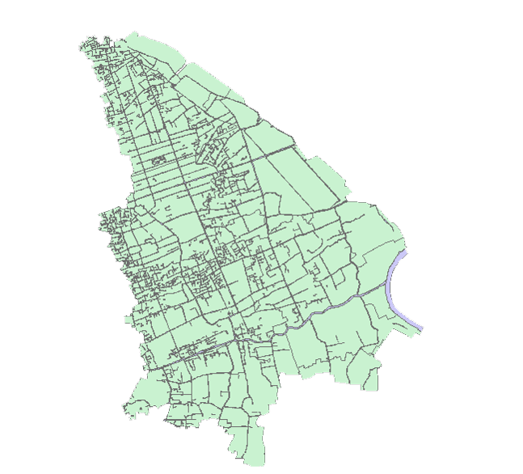

水资源保护
水岸线管理
水污染防治
河道管理地图电子大屏系统
水环境治理
水生态修复
执法监管
监测站指标信息
基本信息
达标
断面名称
蕴川路桥
行政区划
宝山区
目标水质
Ⅱ
水质类别
Ⅱ
是否达标
是
采集时间
2020-06-07
河流水质要素及时间变化
水温
总氮
总磷
溶解氧
化学需氧量

河流水质达标情况
国考断面：
5个
市考断面：
12个
水质达标率：
85%
水环境治理对象
水环境治理词云
水环境治理对象
编号
类型
所属辖区
治理目标
治理措施
治理状态
1
垃圾清理
罗泾镇
完成治理
2
截污治理
罗泾镇
3
水体垃圾清理
罗泾镇
4
清淤疏浚
罗泾镇